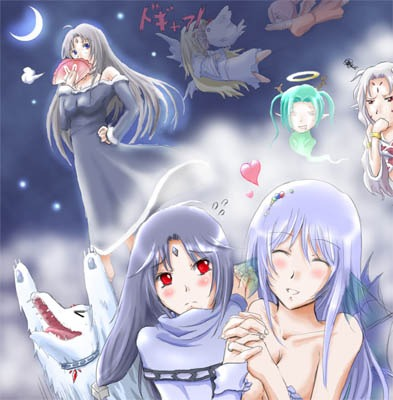

シルバーセカンド開発日誌
■
2008-11-08 (土) シル学主人公とか▼猛烈に風邪引いたウルフです、もう何もかもウッヒョウ！！
寝込んでたのでお見せできるようなものがあんまりなく。
仕方ないので虎の子の男主人公をアップ！！
男の子合成パーツとも言います。
いやーここまでずっとシル学情報出してきたのに
まともな男の子の画像がタツ五郎（全裸）だけだったっていう不思議！
※↓ じーっと見てると画像が変わります！ 7秒くらい。

【シチュエーション】
散髪屋で「かっこよくしてください」と注文した主人公の髪型の変遷
せっかくなのでアクセサリも装備可能になる予定です。リボンとかね。
全裸でもリボンさえあればすっごいキュートにッ！！！！
（なりません）
＞鳥系トーテムの名前いろいろ
みなさまたくさんの案を送ってくださってありがとうございます！
ササミとかモモちゃんとかおいしそうですね。
フェザーにもヤキトリって名前付けていいですか。
何はともあれ、分かりやすい名前があればいいんですけどね。
ファングとかクロウは、聞いた瞬間に
戦闘系って分かりそうなんですけど。
んー難しい、難しいですぞネーミング。
＞話は変わりますが鳥系にペンギンはいかがですか？
お、いいですねえソレ。
そのうちかわいい系トーテムとして使うかもしれません。
＞クラウド君が棒を回さなくなった理由
「（広島）カープの不調が原因だとか言ってました」
「前は暑さでやってくれないとかいってましたね＾＾」
「一説によると『大人になって棒回しがそこまで
楽しくないことに気づいた』からだそうで」
うわあ理由が変わりすぎ！
最後の一個が何だか現実的すぎて笑えます。
でも人生長生きしたら、色んなことも
「そこまで楽しくない」と思っちゃうのかもしれません。
＞シル学にはプチリスちゃんを出す予定などはありますか？
＞是非攻略したいのですが。
出るかどうかはまだ分かりません、攻略したいキャラ大募集中！！！
今のところアルバートとかエージス先生とか
セタパパとかエシュターとかシンとか
シズナとかメアリーとかシーナとか
ウリユとかナダさんあたり検討中です。
他にもいっぱい作ろうと思えば作れる気もしないでもないんですが、
どこに重点を置くかってのは難しいところですね。
でもこの調子だと、男陣が親父だらけになりそうな予感Maxです！！
攻略したい男キャラに困りそうです。男女キャラ問わず、
このキャラ攻略したーいって
ご意見がございましたらドシドシお寄せ下さい！！ ■
2008-10-27 (月) 顔自作へのご意見▼
「シルフェイド学院物語において、
主人公の顔を自作可能にするかどうか」
の議論に対するご意見を非常にたくさん頂きました。
非常によく考えられたご意見を頂いたりして、
何から何まで感謝の極みです！
頂いたご意見の一例を以下にご紹介。
【顔自作がいい】
＞自作に一票！
＞このゲームで活躍するのが「あなた」なら、ゲームとしては
＞やはり顔自作有りが好ましいとは思います。
＞自作顔希望派です。
＞NPCと顔が被るなら逆にNPCの顔をランダム化して被らないようにすれば？
＞自分は自作の方がいいですね
＞時間と労力があったら創ればいいんじゃ？
＞主人公を作成する時に、顔有りか顔無しか選べるとうれしいなぁ
デメリット対策を一緒に書いてくださる方もおられました、9通でした。
【顔固定でいい】
＞デフォ顔のみでいいです。
＞デフォ顔でも愛着が湧くと思いますよ。
＞固定の方がいい
＞開発速度が落ちるならやらなくてもいいと思います。
＞顔変えられなくても良いと思うです、または2、3種類から選ぶくらいで。
＞人生ゲームなどで同じ顔出てきた！？
＞ってなったとき悲しい気がするので×
＞ゴンベエやナナシが、名前も台詞もないのにFAEの主人公に据えられたような
＞愛され方がなくなるのは…二周目や整形外科で変えられてるならいいですが
＞最初はデフォ顔の方がいいと思います。
＞自分で作ると自分も作者側みたいな感じになって感情移入しずらい
11通＋メールと掲示板で2通ほど頂きました。
変えなくていい派の人がちょっと多め。
色々対応策なども考えてくださった方が多く、
非常に参考になりました。
「MMORPGみたいなのと違って固定物語の主人公なら、
特に自作しない方が作者のイメージに合ったまま遊べてよい」
とか、そういったご意見もありましたね。
とりあえず別に多数決ってワケでもないので、
皆さんに満足していただくのなら
当然うまいこと両方取り入れた方がいいわけで、色々考え所です。
それにしてもずっぱり分かれたなあ！
でも、自由度が低めの方がいいという案が
意外に多いのはすごく勉強になりました！
以下はその他のご意見です。
＞主人公の顔自作で重くなるなら、
＞合成後の画像を作ればいいのでは？
このご意見を10通くらい頂いてしまったのですが、
私の今の技術では難しそうです。
ウディタ・グラフィック合成器と作ってきたのですが、
C++でPNGの透過を維持したままの画像合成＆出力は、
なかなか簡単にできる印象ではありません。
できるようになったら、
他にも色々やれる幅が広がりそうなんですけれどね。
＞自作にすると育成グラフィックと
＞合わなくなっちゃうのでちょっと。
＞面白そうだと思いますが前述の育成CGとかで出るキャラと
＞かけ離れちゃうと違和感はあるかも。
計3通頂きました、そうなんですよ！
「写真はイメージです」で通してもいいんですがちょっと！
＞どんな感じで自作キャラ編集ができるかわかりませんが、
＞顔パーツを引き伸ばしたり位置を変えたりできたら
＞同じ顔になりませんよね。
いい案だと思うのですが、センスが求められすぎなので
普通の人にはキツいんですよコレ。
何にせよ、パーツ自体の調整は
色変えくらいにとどめようと思います！
3Dで作れるなら、モーフィングとか
何だとかで作れるかもしれませんけども。
＞主人公の顔について、プレイヤーの自由に出来る部分を
＞少なめにすれば色々とやりやすいのでは？
これも分かります。髪型を3種類だけに限定するだけでも
色々と楽になりそうです。
＞主人公と同じ顔のNPCがいたら、自動的に（NPCの）顔を
＞1パーツだけ変えるようにすればどうでしょう？
それもアリだと思うんですが、パーツの一つや二つ変えてもあんまり
変わらないのが難点です。
マユ毛だけ違うキャラが出てきても一緒ですしね。
ついでに、ユーザーさんの手で
オリジナルキャラを登録できるシステムなので、
登場時に勝手に顔が変わっててもイヤだと思うんですよ、うん。
＞非人間キャラも主人公に出来ると嬉しいです
ブフォッ、さらに押し進めよ意見が！？
でも労力が少しでも余ってるなら、
それくらいの意気込みは絶対要ると思います！
押して押すのが良作の条件。
＞胸のサイズが設定できたら素敵だな、と思いませんか？
つまり爆乳の男の子がご所望なんですね！！
そして保健体育の授業中「性について」のテーマでネタにされる主人公。
いやまあ実際にいたら色々困ることも多いんでしょうけれど。
ついでにGoogleで「"爆乳の男の子"」で検索したら
「"爆乳の男の子"との一致はありません」でした、
これは新ジャンルの予感！？
という感じでした。とりあえずのスタンスとしては、頂いたご意見を参考に
・主人公顔自作機能自体は余裕があれば入れる
・顔自作で可能な操作は、パーツ選択 ＆ 色変更の2つ。
・顔自作は二周目特典にするか、一周目から理容室で髪型だけ変更可に
→ 二周目以降に気分を一新するための
要素と考えても悪くないと思います！
これなら一周目は育成画像とのマッチングができますしね！
というあたりで行くのがよさそうな印象です。
一周クリアで一通りモブNPCの顔も把握できますし、
元より一周で終わるゲームにはならなさそうですし。
なお、主人公の顔グラフィックは、ステータス画面に出てくる顔と
戦闘時のキャラクターグラフィックに影響する予定です。
それ以外は、主人公のセリフは基本的にないので会話中に顔は出ず、
あんまり変わらない、といえば変わりません。
クリア後のオンライン名簿（※予定）に
顔が載ったりするくらいでしょうか。
クリア状況やステータス、取得スキル・そのプレイで攻略したキャラ、
などを見ることができる！って感じのを考え中です、お楽しみに！
にしても、自作キャラできるよ！
って言われるとピンクのツインテール男の子とか、
名前が「ヒャッハー」というモヒカンの女の子とか
独特なのが出てくるんでしょうね。
今から恐怖です。■
2008-10-19 (日) シル学 育成画面2▼チキンラーメン割ったらカケラが目に入って痛くて涙目のウルフです。
前回に引き続き育成画面の紹介です。
育成実行画面

育成グラフィックは透子さんが担当してくださっています。
あ、言い忘れてましたが、
シルフェイド学院物語の主人公は「あなた」です！
ゴンベエとかナナシとかそんな呼ばれ方もありますが、
女の子（デフォ状態）は今回ポニテじゃなくて
↑みたいなミドルヘアーで、そしてまな板でもありません！！
設定的には「磨けば美人コンテストで一位になれるくらいの素材」です。
今回世界を救うためには魅力も必要だからという理由で、
神様が万能型の体に作ったわけですね。
完全戦闘重視の幻想譚女主人公とは違うのです。
（ただし男の子はまあ、割とそのまま）
顔は、パーツ合成で作成できるようにするかどうするか
迷ってるところです。
で、引き続きステータスの説明です。
右のウィンドウ、上部と下部に2つありますが、まずは上の方から。
・筋力 ：
パワー、高くなると戦闘で与えるダメージが増加、
スタミナ消費量が減少。
・敏捷 ：
戦闘で、回避率や行動速度が上がる。
何か器用なことをするときにも有効。
・生命 ：
元気さ。高いほど育成による「ダメージ」が減少する。
戦闘中のLIFEも増加。
ついでに戦闘中のスタミナ消費量も減少。
・知力 ：
ひらめきや注意力。テストの点が上がりやすくなる。
新スキルの発生にも影響する？ それは未定。
・意志 ：
ストレスへの耐性。高いほど育成による「ストレス」が減少する。
戦闘では倒れたときに立ち上がれるかどうかの時の回復力がアップ。
・魅力 ：
仕草や話し方も含めた「魅力」を表します。
生活する上で自然に上がっていく好感度の上昇率が上がったり、
会議バトル（仮名）において自分の主張が通りやすくなる。
という感じ！ ただ所属クラスによっては
あまり意味のないパラメータもあるので、
それらを上げることによる利点なども用意したいところです。
たとえば武術ルートの「知力」は基本的に
死にパラメータだけど、上げるとテクニカルな技を
いっぱい覚えられるようになる、という具合にするのも
面白いかもしれません。
で、次に、右下にある「経験値」欄ですが、
これはスキル習得に必要なポイントです。
心・技・体・？ の4種類があり、この4つのポイントを
スキルに応じて消費することで、スキル習得が可能です。
（例：「強打」の習得には技5P+体5Pが必要。
「治癒」の理力には心20P必要、とか）
ぶっちゃけ、参考にするといいよって意見が
大量に来たパワプ●方式なんですが！
でも単純で育成コマンドごとの魅力を出しつつ考えて育成するとなると、
どうにもこの方式に落ち着いてしまいますね。
仮に「武術スキルは武術経験値上げれば手に入る」にすると、
育て方もパラメータも偏ってしまいます
（ただひたすら武術コマンド実行）が、
この方式なら目的のパラメータを上げやすいクラブに狙って入るとか、
そういう攻略の幅もできるので面白そうです。
以下は頂いたコメント。 ▼追記を開く▼＞二次創作キットのテキストファイルから
＞戦闘画面ことはできますか？
シルエットノートでは、戦闘の起動はできません。
シルフェイド学院物語のことでしたら、作者自身が全部
テキストファイルでシナリオや戦闘発生その他のコマンドを
打ち込む予定なので、原作でできることは何でもできる予定です。
＞＞基本・訓練コマンドの代案色々
ご意見いっぱいありがとうございます！
参考になりそうなご意見は、ぜひ検討させていただきたいと思います。■
2008-10-14 (火) シル学 育成画面▼地道な作業が苦しいシーズンです。
今作ってるのが下積みなので、どうにもお見せできないし、
自分もそれなりに頑張ってるつもりなのですが
さっぱり進んでる気がしません。
でもこの程度の事で焦るのは、心が弱くなってる証拠に他なりません。
常に、やることだけを、無心で重ね続ける。それだけが重要で、
それ以外のことは笑って受け入れられる強い優しさが欲しいです。
だから今からまた無心で作業。
とりあえずこのしんどさを解決するために、スタッフの人に
「もうすぐシステムのプロトタイプ見せるよ！！」宣言して
自分を追いつめることにしました。
ここを見て下さっている皆さまには、
ある程度ゲームの体裁を整えた状態にできましたら
システム紹介ムービーあたりをお見せできると思いますので、
ご期待下さい。
とりあえず今回はシルフェイド学院物語の育成画面プロトタイプをば。

今回、背景はタクミさんにお願いしています。美麗背景！！
で、画面を見ていただけるとお分かりのように、育成コマンドには、
基本・訓練・バイト・休息の4種類があります。それぞれ、
・基本
無料で実行できる自主的なトレーニング、筋トレとか走り込みとか勉強
・訓練
有料で受けられる訓練/強化。スポーツジム・改造手術・塾など
・バイト
お金を得ることができる育成。
食堂のバイトとか新聞配達とか夜のお仕事。
・休息
ダメージ・ストレスを回復させる育成。
寝る・病院に行く・エステ（魅力＋）。
「基本・訓練」は
何か他に格好いい言い方がないか検討中です。
無料・有料はカッコ悪いしなあ。
ファンタジー版の追加シナリオなど作る場合にも
自然に対応させるためには、なるべく大雑把な意味の単語の方が
いいんですけどね。何がいいかな。
で、それぞれの育成コマンドを一週間それぞれに割り当てていきます。
ここでは日曜から土曜まで全部
「筋トレ」にセットされています。
ちなみに上の基本メニューも全部筋トレ！
選択の余地なく筋トレ強要です、どんだけ筋トレマニアの主人公なんだと。
右のパラメータについての説明は、次回のお楽しみに！
ネタが少なすぎる上に毎度記事が長すぎて読むの大変ですから、
内容をコマ切れにしておこうと思いまして！
色々妄想してみてください。でも見れば分かるかな。
以下は余談。 ▼追記を開く▼
【難易度設定についての小話】
メトロイドフュージョンというゲームには、
こどもモードとおとなモードがあります。
最初見たときは「お、おとなモードですと！？ゴクリ……」
と思いましたが単にこどもモードに比べて
劇中で使われる単語がちょっと難しくなってるだけで、
別にアレやコレや凄いことなんて何もありませんでした、嗚呼……！
（例：こども版「てきの××をやっつけろ！」
おとな版「敵の××を撃破してくれ！」）
ちょっとでも期待した自分が馬鹿だったのを覚えていま――
じゃなくて、物語の難しさも選択できるってのは
ある意味画期的ですね！ ということが言いたくて！
で、年齢別、性別、趣味、特技その他色々に
対応したゲーム出ませんかね！？
同じ物語なのに、アクション好きか
RPG好きかどうかでジャンルが変わるとか。
ないか、ないや。
ふと思っただけで実用性ゼロの案でしたとさ……。
＞Σシズナ＋血便って…サユキにはうんこ成分が！？ああ…
＞サユキもシズナもどっちも同点一位！って位大好きなキャラなんで、
＞製作者様からそういう言葉が出ると悲しいです…Ｔ△Ｔ
＞っていう、私みたいにこの２人好きな人…少ないんでしょうね
シズナは幻想譚の正ヒロイン（人間限定）ですよ！？
一応。地味でしたけど。
サユキはヒロイン予定だったのに、
作ってるシーズン途中で私がちょっと休みも取らずに頑張りすぎて、
とうとう血便発射に至る事件が起きまして、
その体験の印象が強すぎてああいう事態に……。
ファイナル●ンタジー7のエア●スさんがあんなことになったのは、
スタッフさんの間で不幸があったからという
ウワサがあった気がしますし（違うかも）、
作者の体験というのは、どうしても作品に反映されてしまうと思います。
＞（シルフェイド学院物語の）完成予定はいつごろですか？
少なくとも自分が中身に満足するまでは出しません！！
来年春くらい？
今回は真剣にゲームっぽいゲームを
楽しんでいただけるよう頑張りますぞ！
＞（シルフェイド学院物語の）戦闘複雑すぎて、わかりづらいです。
＞ゲーム内でうまいこと説明するのは難しいんじゃ……
わかりました！
ゲーム内で2～3戦もすれば直感的に理解できるように作ります！
といいますかボクシングのシステムは、戦ってる本人からしたら、
ただ相手を殴ってるだけでもちゃんとケリが付くいいルールですから、
そんなに心配なさらずとも大丈夫です！
自分がガチ強かったら、相手をそのまま
ゴリ押しでやっつけちゃえばいいのは変わりません。
なので前回ご紹介したややこしいルールは
「勝てるかどうか分からないときだけ、
ルールを活用しなきゃいけなくなる」
という感じになると思います！■
2008-10-06 (月) すぐ死ぬ対策委員会▼
シルフェイド学院物語用シズナ。
基本的にはシル幻のときと一緒ですね。
シズナ描いてて思い出しましたが、シルエットノートの冬村サユキは
もともとシル幻のシズナが対応元になるはずだったんです。
といってもヘアバンドくらいしか名残がありませんけど。
今思うと、サユキの誕生ネタ元は
シズナ＋血便 ＝ サユキ
だったのかもしれません。
「エシュター＋ゴンベエ＝シシト」の方程式と比べると
月とスッポンというか、何というか、ああ無情。
<前回のあらすじ>
「シル学の戦闘、強い人と戦ったときに
瞬殺されるのはつまらんです！」
そう言われて私はシルフェイド学院物語の戦闘に
一工夫入れることにしました！
【ボクシング的システムの導入】
以下は、基本的に武闘部の「試合」で導入されるシステムです。
単純な殺し合い的戦闘やケンカでは導入されません。
ちなみに試合はほとんど「剣」使用のバトルです。
・【ラウンド制】 試合は一定時間ごとにインターバルが入る。
一定回数行動するとラウンドが終了し、インターバルごとに
LIFE・元気（スタミナの回復速度）が30％くらい回復する。
定められたラウンド数が経過すると、戦闘が自動的に終了する。
一度やられても、倒れたラウンドをしのげば
何とか次に繋げることができる（かもしれない）システム。
・【ダウンシステム】 LIFEが0以下になると倒れ、10カウントが始まる
カウント中は残り元気を消費しながら徐々にLIFEが回復する、
10カウント以内にLIFE0以上まで戻れば復帰。つまり疲労が
まだ少ない試合開始時なら、倒されても確実に復帰可能だったり、
やられ方によってはすぐ立ち上がることができるシステム。
（例：うまいことLIFEのマイナス値が少なくなるよう敵の攻撃を食らう）
逆に、敵を倒しに行く場合はまず敵LIFEをぎりぎりまで削って、
次の攻撃でオーバーキルする方が倒せる確率が高いシステム。
テクニカルノックアウト
（1ラウンド中に複数回倒れると自動的に負ける）は
今のところナシです、プレイヤー側に不利なだけですから。
・【ポイントシステム】 ポイントはラウンドごとに最大10点加算
攻撃をクリーンヒットさせた回数の多い方が高得点を得る。
もし最終ラウンドが終わるまでお互いが立っていた場合は、
ラウンドごとの総計ポイントの多い方が勝者となる。
ダウンすると自ポイント減。
敵のガードがあまりに堅すぎた場合などには、敵に状態異常連発したり
自分の回避を超アップさせる戦法でポイント勝利できるシステム。
※システムが多くて難しそうですけど、
基本的には、「一定時間ごとに回復有り」
「とりあえず敵ブッ倒せばいいよ！
もし倒せそうにないならルールを利用しろ！」
ってことだけです。
こんな風に、ボクシングのルールはテクニカルに戦うこともできるし
暴れ牛みたいなラフファイトでも問題ないのが
よく出来てるなあ、と思いました。
そりゃ夢中で戦ってる本人からしたら、ルールに縛られて
全力で力のぶつけ合いができないとかイヤですもんね！
【いただいたご意見】
こんなのはどう？という感じで関連するご意見を頂きました。
・ガッツがあればまれにHP1で復活！！
マザーやブレスオブファイアなどなど
HPが-10ごとに立ち上がれる確率が減るとか。
・HP0でも次にトドメの攻撃受けない限り
死なないシステムとかどうですか？
・レースの概念。先頭の後ろに張り付いてる方が
スリップストリームのおかげで燃料消費が少ない、
最後に抜けば勝利、という発想は？
などなどのご意見を頂きましたが、
最終的にリアル世界に既存のシステムを
そのまま落とし込むことにしました。
レースとかなかなか思いつかない発想ですが、
こういう感じで自分が見慣れたものを
落とし込むのはいいかもしれませんね！
私はたまたま、「はじめの一歩Revolution」という
Wiiのボクシングゲームを腕が壊れるほど遊んでいたので、
使えると思ってボクシング案を採用しました！
＞幻想譚で要望が多かった(らしい)3人パーティは
＞実現しないのでしょうか。そして、モノリス様たちは学院物語には…
試合は1vs1の繰り返しでトーナメントなどをするでしょうから、
基本的にタイマンがメインになりそうですが、
最大で3人vs3人までは対応予定です。
モノリス様たちは、何人かが隠しボスとして
出てくるくらいには出番があるかもしれません！
なんせ人間サイズのキャラなので
素材作りやすいというのがありますし、
モノリスさん（要武装）とかハーディアさんとかメッチャ強いですし、
育てたキャラで戦ってみたいという人もいるんじゃないでしょうか。
＞ペーパーマン12月に始まるのか～
＞でも今はA.V.Aの方がスタートしてそっちの方に注目いってて
＞全然気にしてなかったり・・・ウルフさんは
＞A.V.Aはどうなんでしょう？結構面白かったですよ
はい、今まさに遊んでます！ A.V.Aクローズドβ！
私は無料FPSの渡り鳥のような感じなので、
飽きたらまた次のゲームへ行くと思いますけれどね！
とりあえずランドマス終了すると
クランページが使えなくなっちゃうので、
要るか要らないか分かりませんが共有寄り合い所作っておきました。
- シル傭兵団 ゲーム寄り合い所 - (閉鎖済み)■
2008-09-30 (火) シル学モブキャラ▼WOLF RPGエディターのバグ修正難易度が
どんどん上がってきて涙目なウルフです。
普通にすぐ気付ける場所のバグは
ほとんどなくなってしまってきたので、
今は1時間かけてバグ箇所探して、たった5文字直して修正完了とか
速度アップのためにクラス一個まるまる修正とか
ザラになってきました。
おかしな点を探すのは、探偵ごっこみたいで面白いですけどね！
新機能、バグ修正諸々で修正項目が
もう150点超えた頃だと思うのですが、
それを考えるとエンターブレインさんちのバグの少なさは異常です。
でシルフェイド学院物語モブキャラ紹介。
モブキャラ紹介されても全然嬉しくないですね、ハッハッハ。

え、名前？ 名前はーえーとえーと、じゃあタツ五郎！
まだ服は描いてません。
竜人だけど日本人で、新潟で米作ってる人間の農家の元で育てられ、
16歳の誕生日にこれからの時代は勉強も必要ですよと言われて
はるばるシルフェイド学院に入学してきた。
口癖は「おっかぁの米さうめーぞ、ほら喰え」で、
いつも実家の米を勧めてくる。
セタは何だかエリートって感じで生活感がないので、
庶民的な竜人をご用意しました！
ちなみに、シルフェイド学院物語の世界では竜人やら狼人間やらが
普通に存在しています。世界観としては、時は西暦20XX年、
第二次世界大戦の時代に遺伝科学は革命的に進歩し、
（略）云々ホニャララ（全略）で、普通の人間に混ざって
人間っぽい生き物がいっぱいいるワールドです。
非人間キャラ大好きっ子としては夢のような世界ですね！
そんな中でも、タツ五郎（仮）は我々の世界とシル学世界の
隔たりを理解するための代表的なキャラクターなのかもしれません。
という感じで10分くらいで考えてみたキャラです。
あ、でもちゃんと出すよ！？出しますよ！？
テキトーに考えてみたけど
主人公のお友達キャラとしてかなり使えそう。
それともう一つ、予定通り、
戦闘システムのメイン部分が完成しました！
あとは個々のスキル実装とか細かな演出強化とか考えつつ、
完成度を高める作業が残るだけです。
一旦冷却して、再度眺めてみたいと思います。
次はダンジョンシステムを開発予定です。
シナリオの大筋も考え始めようと思います。 ▼追記を開く▼＞「ランドマスが10/31にサービス終了らしいですね」
＞「ペーパーマンの開始が12月に決定されましたね」
ということでついに終わってしまうランドマスですが、
代わりにペーパーマンが来そうとのこと！
飽きないマップが多いと嬉しいんですけどね。
＞そう言えば、セタとかはどうなるんですかね？
＞FANでは擬人化になってましたけど、
＞出るとしたらやっぱり竜人のままかな？
竜人のままですよ！ 全然うれしくない着替えシーンがあったりして。
主「おまえ、実はお……いや、どっちなんだ」
セタ「貴様あとで体育館裏に来い」
というイベントがあったりなかったり。
2つ前の戦闘システムの記事に対して、
＞高難易度において適切に攻撃・防御を行っても能力差により
＞押し切られ結局レベル上げを強いられるというのではつまらないので、
＞高難易度ではぎりぎりの綱渡りのような感覚を楽しみながら
＞最期まで勝てる可能性を感じられるような調整をお願いしたいです。
＞シルフェイド見聞録の教頭先生の「竜王の舞」が実はただの
＞「多段斬り」で本人の技量(とつぎ込んだWILL)で必殺技に
＞なっているという考え方はとても好みに合っていたのですが、
＞今回のシステムでは最大10連続攻撃を再現したりそれを耐える
＞(体力最大から即死しない)ことは可能なのでしょうか。
2つの面白いご意見を頂きました。
「押し切られて死ぬのはつまらない」コースだと、
敵味方、互いの攻撃力を上げ気味にする必要があるんですが
そうなると多段撃とか即死コンボ間違いなしですよね！
今回は、ガード回数の都合から攻撃回数の多い技が非常に強くなるので、
多段撃みたいなのは威力低めの複数攻撃とかそういうのになりそうです。
「相手がメチャメチャ強い場合でも、綱渡り的に戦闘続行できる。
一撃必殺攻撃を食らっても戦闘を続行できる（かもしれない）」
という感じのシステムが、何か必要かもしれませんね。
リアルな世界だと、ボクシングなんかのシステムが参考になりそうです、
ちょっと調べてみたいと思います。■
2008-09-20 (土) シル学戦闘システム▼シルフェイド学院物語の戦闘システムの開発を続行中です。
基本システムはシルフェイド幻想譚のものを半分くらい踏襲しています。
フォースの代わりにスタミナゲージがくっつきました。
っていうかキャラ絵描き直したいゲッフゲフン。

基本的には、自分の順が回ってきたら
行動回数分だけコマンドを選び、そして
攻撃対象を選択するとその対象に
行動回数分のアタックをまとめて仕掛けるという
そんな感じになっています。
幻想譚と見聞録足して2で割ったような感じですね。
コマンドを選ぶと、選んだだけスタミナを消費します。
スタミナがマイナスになると、その時間だけ動けなくなります。
これまでの自分の作品になかった要素として、
まず「疲労システム」があります。
長い戦いで累計の消費スタミナが増えると、
スタミナの回復スピードがどんどん落ちていきます。
（ST 100％の右にある「もう限界」はほとんど回復できない状態を表す）
防御しまくって敵のスタミナ切れを待ったり、
長期戦でお互いボロボロの泥仕合になったりと、
試合中の変化を設けるためのシステムです。
また、今回は特殊な防御力の概念として、
「回数ガードシステム（仮名）」を搭載予定です。
例えばあるキャラのガード率のパラメータが「20％＋15％×2」だったら、
敵の一発目の攻撃を50％（20+15×2)防げて、
次の攻撃は35％（20+15×1)防げる、
3回目は防御回数がなくなるのでダメージ素通り（0％）、という具合に、
連続攻撃を受けるとどんどん食らうダメージが上がっていくシステムです。
防御回数は自分のターンが回ってくると回復します。
これの何がいいって、連続攻撃したときのフィニッシュ攻撃の
ダメージが大きい方がスカっとするだろうなあ、
というのを実現させるため！
ただの通常攻撃3連打でも7→12→20ダメージ！という感じになるので、
幻想譚のときみたいに「何かダメージにメリハリないなあ」、
ってことはなくなると思います。
このケースだと、攻撃を一つ減らすとダメージ39(7+12+20)だったのが
半分の19(7+12)になったりするので、行動回数を全部攻撃に回すか
防御しつつチマチマ戦うか、
その辺りの決断を迫られる戦闘になると思います。
中には防御回数を消費して必殺の一撃を与える技があったり、
フェイントで敵のガードを2ポイント以上
まとめて削ったりといった要素も！
これなら、リソースを攻撃と防御に分配して
戦うという見聞録のWILLシステムと似たような概念を、
単純なコマンド入力型として組み込むことができるので
分かりやすくていいかなと思います。
多人数と戦ったら防御しきれないのも同じ！
似たような主張でも、形を変えて実現できるってのは面白いですね。
注意点は、攻撃回数の多い人が圧倒的に強くなるというところ。
（毎ターン「防御」しながら
相手と同じ回数の攻撃ができたりするわけです）
ただ、攻撃回数の多い人はその分スタミナ切れも早くなるので、
時間が経てば、どのみちたくさん行動できなくなってしまいます。
防戦一方でも、長く耐えられれば勝機が見えるというような、
そんな展開を演出するための疲労システムですね。
バランス間違えると、一気にどれかのシステムの意味が
パーになりそうな要素が増えてきたので、ちょっと楽しそうです。
というか、幻想譚でも要望があったので、言われないうちに
最初から難易度設定できるように
考えておいた方がいい気がしてきました。
どういう部分で難易度変えるかなあ。NPCキャラのパラメータ？
以下は拍手コメントから気になったご質問メッセージ。 ▼追記を開く▼>（シル学の）ダンジョンはウィザー○リィみたいなのですか？
>それともトル○コですか？
上から見たウィザー○リィみたいな感じでしょうか。
あれそれって普通のRPG？
3Dダンジョンは不慣れな人には完全にダメな印象もあるんですけど、
そういう一般への浸透度合いはどんなもんなんでしょうね。
自分には、ファミコンの
がんばれゴエモンとかZOID2のWIZ系ダンジョンで
道に迷った記憶しかありません。
あ、でもウィザードリィ外伝はいくつか遊びました。
最近は地図が出っぱなしのゲームも多いですよね。
>話の腰を折るようで悪いですが、
＞シル見リメイク案はどうなってますか？
>廃棄ですか？ 廃棄なんですか？
前のHDDぶっ飛び事件でデータが結構吹っ飛んだのでションボリしてますが、
シル見はアビャラベバラピブー（訳：気晴らししたーい！）って
なった時に顔グラフィックリメイクを進めています！
顔グラフィックを640x480対応にすればシル学にも流用できますから、
どちらかが進めばもう片方も進むフルオート並行作業！！
使い回しでどうもスミマセン。
ナダさんもっとかわいくしたいなあとか思ってます。
＞クリフさんとかはどうなるの？ 鍵が無くて、
＞ずっとダンジョンの浅い階で迷ってる役？
いちおう神官（騎士）の人なので、教会などで出てくるかもしれません。
っていうか何ですかその役！？
スタッフロールとかでこんな感じに出てきそうですね。
↓
主人公（セリフ無し） ゴンベエ
背景の街路樹 アルバート
カギがなくてずっとダンジョンの浅い階で迷ってる役 クリフ
クリフに背中を見せないようにグルグル回ってる役 セシュ
グラビア写真集に載りかけたのに年がバレて没られる役 ユーミス
こ、これだとどんな話なのか全く分かりません！
あ、それとご指摘がありましたが、クリフ迷宮録が
Gameのミニ作品集に載ってなかったので
近々載せておこうと思います。
これも何らかの形で完成させたいなあ。■
2008-08-21 (木) シル学 アニメーションバリバリ▼ハードディスク破損のおかげで、シルフェイド学院物語では
キャラがバリバリのアクションしながら戦闘する予定になりました。
というのも、ハードディスク壊れたせいで
主作業に取りかかる気が出なくて
しばらく寄り道しようと思って
色々作ってたらそれっぽいのができたのです。
あのときハードディスク壊れたのは、
実は良い天啓だったのかもしれません。
ありがとうパソコンの神様！

とりあえず待機モーションとガードモーションだけ。
赤い棒は武器に差し替えます。
ということで素直に幻想譚方式の
戦闘デザインにしときゃいいのに、
また楽しい作業が増えてしまいました。
この素体は今後も使い回す予定です。
シミュレーションRPGの戦闘アニメに使うとか、
このまま歩かせてデカキャラの
横スクロールRPG作ってみたらどうかとか、夢ばっかり膨らみます。
そして毎度のことながら
「面倒かったら全裸キャラのままでもいいんじゃね！？」
とか脳内の悪魔がささやいてきます。
ええ！私はいつもアクセル全開です！！
まあ全裸じゃなくても、全員全身タイツは有りうるかもしれないので
覚悟しておいてください！！
「シルフェイド学院の校則では、
戦闘で許される着衣は全身タイツのみである！！」
という設定とか、いつでもやってしまえる準備があります！
でも一昔前のトンデモゲームに比べたら
そんなの全然マシだと思いました！
何の脈絡もなく出てきたムササビ撃ったら
自分のライフが減るガンシューティングとか
意味がよく分からないゲームも結構あったのです。
そういう意味では、昔のコンシューマゲームより
昨今のアマチュアゲームの方が
デキがいいと言える物も多いんですよね。
進化してるなあ。

やっと完成。描き始めてから一ヶ月以上経ってる予感が。
あとモノリスフィアのアンケートも
先日アップしたのですが、
キャラ投票の結果に驚きました。
草子さんがかわいそうすぎる、いや微妙といえば微妙なお方なんですが。
一番……というには何だか印象が薄いし、二番ってほどでも……ない？
という果てに下から数えた方が早くなってしまったような、
毒にも薬にもならない感じの人でした、草なのに。
何はともあれ、皆さまから色々なご意見が聞けて
とても参考になりました！
開発には慣れてきたので、
これからもモノリスフィアみたいな新機軸ゲーに
色々挑戦していきたいなあと思っています。
ネタが思いついたらね！
モノリスフィアはネタを思いついたとき、それまでの予定を
全部ほっぽり出しても作りたくなった作品でした。
それだけに、作った甲斐は十分にあったと思っています。
画像周りで協力してくださった、
すうさん、透子さん、氷野さん、そして
テストプレイヤーの皆さん、ご意見を下さった
一般プレイヤーの皆さまには本当に感謝しています、
誠にありがとうございました！
以下はいただいたコメントの中から抜粋。
>HDDって冷凍庫に2･3日ぶち込んだら一瞬生き返るらしいです。
マジで！？ 電池じゃあるまいし。真相やいかに。
でも冷蔵庫にHDDって、
「よく冷えたHDDアルヨー、おにさん一個イカガー？」
とか怪しい外国人風のおっちゃんに
言われそうだなあとか一瞬思いました。
ん？ あれは金属探知器でしたっけ？ ■
2008-07-30 (水) シル学パラメータ案▼
最近作業がいい感じに進んでてウッホウホです。
お絵かきとプログラムを変わり変わりにやってるので、
脳が左右両方鍛えられて機嫌がいいのかもしれませんね。
新しい顔グラフィックができるとやっぱり嬉しいものです。
で、開発中のシルフェイド学院物語なんですが、
今のところ、主要パラメータは幻想譚と同じ
「筋力、敏捷、生命、知力、意志」に加えて「魅力」を追加した
計6パラメータにする予定なのですが、果たしてこれでいいかな？
と再考を重ねている状態です。
色々なゲームシステムを搭載する都合上、基本パラメータは
割と大雑把なパラメータであるほうが嬉しいのですが、
「とりあえずこれだけ上げておけばOK」みたいな嫌な意味のシンプルさは
付けたくないので、その辺りどうすればいいのかなあ、
とじっくり煮詰めています。
今のところは、基本パラメータ6つと、
さまざまな効果を発揮する「スキル」の両方で、
物事に対する最終的な能力を算出する仕組みにする予定です。
たとえば「武術運動部」に入ると
「武/運」のスキルレベルを上げられるようになり、
「強打」だとか「消費スタミナ減少」だとか「多段撃」というスキルを
ポイント費やして習得できるよーんという具合です。
一方、基本パラメータは筋力は攻撃力、敏捷は行動速度、
生命はLIFEに影響します。
ただ、戦闘に関わらないところでは覚えた
「スキル」は役に立たないので、
１．効果は薄いけど他のことにも有効な基本パラメータを上げるか、
２．即効性のあるスキルを身につけるか、
の部分が考え所になるようなゲームにしたいなあと考えています。
まあ、ぶっちゃけ幻想譚を育成シミュに
そのまま移したような感じですね。
違うのは、やることが戦闘だけでなく、交流もあったり
アイテム生成があったり、シミュレーション要素が
あったりするかもしれない点くらいです。
ただし1プレイで一気に全部が出てくるわけではないので、
やりたいものだけどうぞ！
というつまみ食いシステムです、ご期待ください。
以下はフリー音楽素材探し記とウディタ講座のお話。
久々にフリーの音楽素材集めしてたら
規約がウディタで使えないところが意外と多くてンギャアアア！
ウディタテスターのすうさんもかつておっしゃってましたが、
確かに面倒臭い！ というか規約がキツい！
別に規約といっても「ちゃんと使用報告してね」くらいだったら、
使わせていただいた場合はよろこんで報告しに行くんですよ！
私も、シルフェイド幻想譚を作ったときは素材を頂いた
皆さまのところに報告しに行きました！
さすがに登録制とか会員制（ログインを要するもの）は
ちょっと面倒かもですけれどね。
でもMP3ファイルで配布されてて「一切いじらないで使ってね」だとか、
「ファイル形式の変換禁止」と書いてあるのは、
ウディタでは自動的に即全滅（※MP3使用不能）なのでそれが絶望的！
もうちょっと規約軽くしてくださぁぁーい！
MP3形式はライセンスの問題で、訴えられる可能性が
ゼロに等しくても使うの恐いんだー！
とまあちょっと文句言ってみましたが、それを見てきたおかげか
「できれば説明書あたりにサイト名書いてくれたら嬉しいな、
あとはご自由にどうぞ」
って書いてある音楽素材サイト見ると
興奮してサイト名とアドレスメモって
全部ファイル落とすくらいあまのじゃく全開です！ 愛してる！
と色々言いましたが、素材を作ってくださっている
皆さまには本当に頭が上がりません。いつもありがとうございます！
これからもいっぱい出てきてくれると嬉しいなあ、素材屋さん。
あ、ウディタといえばすうさんの
ウディタ講座（作りかけ）を見せていただいたんですが
これはクオリティ高いですよ！かなり分かりやすい印象！
ツール開いたけど、具体的に何すればいいのか
分からないよ～という人には、
とても良い手引きになると思いますよ、ご期待下さい。
ちなみに、現状では完全にゼロから作ることを
想定した講座となっているようです。■
2008-07-12 (土) シル学続報 クラスについて▼（人がいない）歩道をスクーターが爆走していったのを見て
3秒後に笑ってしまったウルフです。
でも笑うところじゃない気がします。
親がついに入院したので、そのゴタゴタも含めて
更新ペースが安定しないのですが、
それでも変わらず来てくださる皆さんにはとても感謝しています。
少しペースが崩れるかもしれませんが、
今後とも暖かく見守ってくださると幸いです。
っていうか更新頻度落としてとっとと
ゲーム開発進めた方がいいんでしょうか。迷う。

モノリスフィアのラスボっさん。
まだ塗りかけというか何かが変な気がしてきた。
お絵かきする時間があったらゲームを作ってしまうので
普通のイラスト描いても全然進みません。気晴らしに塗ってます。
で、今回もシルフェイド学院物語の情報！
まだまだ予定の段階ですが、シル学ではゲームの最初のほうで
「所属クラス」を選ぶことになります。
この「クラス」に応じて、
そのプレイにおけるゲームの最終目標が変わってきます。
今のところ、以下の5つを目標にしておりまして、それぞれの目標を
・武術・運動クラス
ただひたすら強くなるのが目標、剣闘大会など
・工学・研究クラス
開発を極めたり何か（賢者の石？）を作るのが目標
・公安クラス
学院で次々に起きる事件を狐狩さんと共に解決する
・運営クラス
派閥として争っているグループの統一を目指す
・考古学クラス
バルト先生と遺跡探索をして古代の謎を解き明かす
みたいな感じにしようかなあと考えています。名前はまだ仮です。
で、各々のクラスにシルキャラが散ってるわけですね。
入ったクラスに応じて、所属キャラクター達との楽しくも切ない
愛と友情と汗まみれの日々を体験できる？のです！
ただし、一回クラスに配属されたら後から変更はききません。
で、プレイヤーさんはその気になれば
新しくクラスを作成することもできるので、
とても人には見せられないようなシナリオを作って裏で配布したり
ルート一本まるまる作ったりして楽しんだりもできます。
よさげなシナリオは、公式認定シナリオとして
ゲーム内からダウンロード可能！
みたいな感じにしていきたいと思っています。
ということで、妄想膨らませまくりのご意見も現在大募集中！！
今のところはシステム開発中で、シナリオには手を付けてませんから、
あのキャラとあのキャラがこのクラスで絡んでたりするのかなあ、とか
同じクラスに入ったらケンカしてそう、とか、
面白そうな妄想でしたらこっそり採用させていただきます！
もちろん自分で作ってみせるぜベイベって人（いるのか！？）は、
ネタを心の内にしまいつつ、バッチリ暖めておいてください！
なおオマケ情報として、ゲームのプレイ期間は3年。
それで、ゲーム開始時はウリユやエシュターが後輩（中等部3年）、
ナダは先輩（高等部2年）、その他はだいたい同学年（高等部1年）、
という感じの設定が今のところ決まっています。セシル君は小学生。
シルフェイド学院は小・中・高・大一貫の学院なので、
同じ学院で出会う可能性はもちろんありますよ。
Copyright © SmokingWOLF / Silver Second
 カテゴリ: シル学
カテゴリ: シル学 カテゴリ: シル学
カテゴリ: シル学